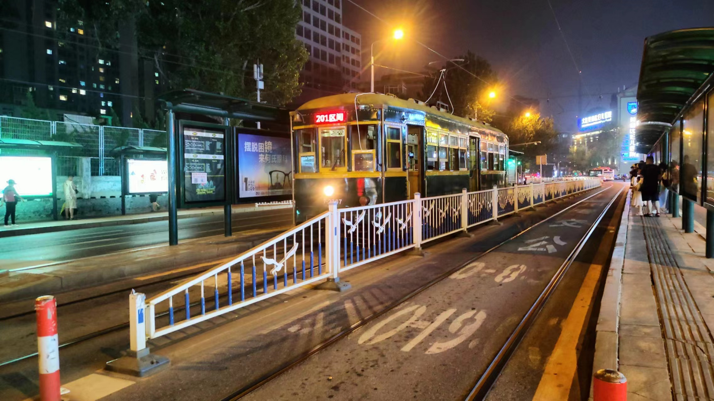
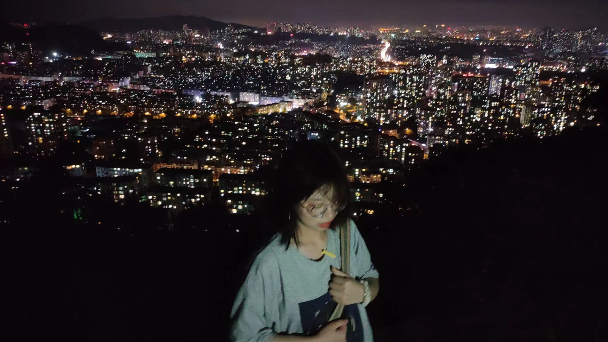

-
简介目录
城市简介：
大连，位于中国辽东半岛的南端，是一座拥有独特海滨风光和悠久历史文化的魅力之城。这座城市以其清新的海风、蜿蜒的海岸线和丰富的旅游资源而闻名于世。
大连的海洋文化是其独特的标签。星海广场、金石滩、老虎滩海洋公园等景点，都是游客们感受海洋魅力的绝佳去处。在这里，你可以漫步在金色的沙滩上，聆听海浪拍打岸边的声音，感受海风的轻拂，享受那份来自海洋的宁静与宽广。
除了海洋文化，大连还承载着丰富的历史记忆。大连现代博物馆、俄罗斯风情街、日本风情街等地，都记录着这座城市曾经的沧桑与辉煌。这些历史遗迹不仅是大连的宝贵财富，也是吸引游客们探寻历史、品味文化的重要场所。
大连还是一座现代化的都市。高楼大厦林立，交通便捷，商业繁荣。在这里，你可以品尝到各种美食，购买到各种时尚的商品，感受到都市生活的便捷与舒适。同时，大连的绿化覆盖率极高，公园、广场、绿地遍布城市各个角落，为市民和游客们提供了良好的休闲场所。
北方特色--搓澡
走进热气腾腾的澡堂，一股温暖而湿润的气息扑面而来，仿佛瞬间将外界的喧嚣与疲惫隔绝在外。脱下衣物，赤脚踏上光滑的瓷砖地面，感受着脚下传来的微微凉意，心中不禁涌起一股轻松与惬意。
作为一个南方人，我之前真的无法接受北方的洗浴文化，但是，搓澡真的很舒服，洗浴中心里有特别多好玩的，我可以在里面呆一整天。
海洋公园
这次海洋公园之旅让我仿佛置身于一个充满奇幻与惊喜的海洋世界。我不仅欣赏到了美丽的海洋生物和壮观的海洋景观，还感受到了海洋的神秘与深邃。这次经历让我对海洋有了更深的了解和认识，也让我更加珍惜和爱护我们共同的蓝色家园。
这里有很多品种的企鹅，所以企鹅也是海洋生物吗？我和朋友们看了动物表演，很有趣！最有意思的是隔壁的万鸟屋，原来鸟停在胳膊上那么重的。
登台日落
站在塔顶，我放眼望去，只见夕阳的余晖洒满了整个天际，将天空染成了一片金红色。远处的海面波光粼粼，仿佛被夕阳的余晖镀上了一层金边，显得分外耀眼。海风轻轻吹过，带走了白天的热气，也带走了我的烦恼和疲惫。
我静静地凝视着夕阳，它缓缓下沉，将最后一抹余晖洒向大地。那一刻，整个世界仿佛都沉浸在了一片金色的海洋中，美得令人窒息。我闭上眼睛，感受着夕阳的温暖和光芒，心中涌起一股莫名的感动。
电车夜游
电车穿梭在城市的繁华与宁静之间，我透过车窗欣赏着沿途的风景。街道两旁的古老建筑与现代高楼交相辉映，形成了独特的城市风貌。电车在熟悉的街角转弯，每一次的停靠都仿佛带我走进了一个个不同的故事。
随着电车的行驶，我逐渐感受到了这座城市的历史与文化底蕴。那些被岁月磨砺过的建筑、那些承载着城市记忆的街角，都在无声地诉说着这座城市的故事。而我，也在这段旅程中，与这座城市有了更深的情感联系。
欣赏夜景
站在山顶，我感受到了城市的繁华与喧嚣，也感受到了大自然的宁静与宽广。这一刻，我仿佛融入了这个世界，成为了这座城市和这片大自然的一部分。这是一次难忘的经历，让我更加珍惜与大自然的亲近，也更加热爱这座美丽的城市。
